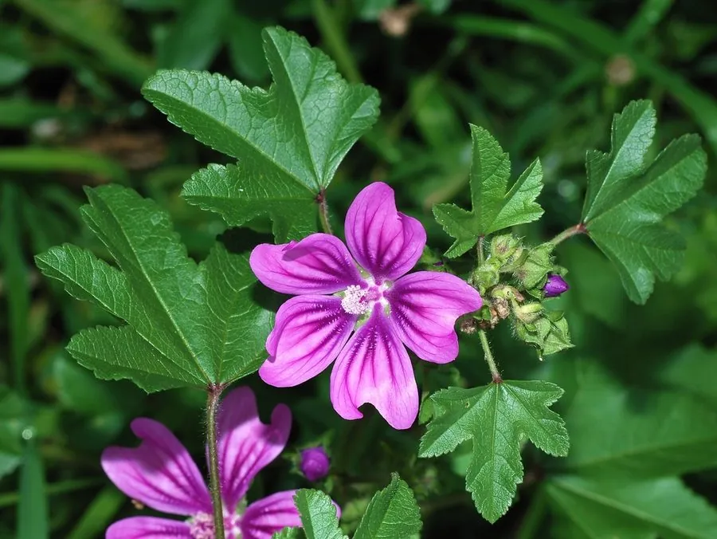

花卉与草本 · 植物界
锦葵 Malva sylvestris

锦葵科二年生草本，粉紫色花朵上有深色脉纹，花果期长，是路旁与庭院常见的野趣花卉，原产欧洲、北非与西亚。
- 分类
- 门被子植物门纲木兰纲目锦葵目科锦葵科属锦葵属
- 栖息环境
- 欧洲至西亚的草地、路旁与荒地，喜光、耐旱、耐寒
- 地理分布
- 原产欧洲、北非与西亚，中国各地路旁庭院常见
- 保护级别
- 暂无评估
物种志
锦葵为锦葵科锦葵属二年生或多年生草本，株高 60–120 厘米，茎直立，多分枝，全株被星状毛。叶片圆心形，边缘有浅裂和锯齿，叶柄长。花簇生于叶腋，花瓣 5 枚，紫红色至淡紫色，具深紫色脉纹，花期 5–9 月；果实为扁圆形的分果，成熟后裂成多个小坚果。
锦葵原产欧洲、北非和西亚，中国各地路旁、荒地和庭院常见，喜阳光充足、凉爽的环境，耐寒耐旱，对土壤要求不严，常自播繁衍。它花朵虽小，但花期长、花色柔美，带有一种野趣，适合布置花境、庭院和路边；嫩叶和花可作蔬菜食用，全草也可入药，有清热利湿之效。锦葵与同科的蜀葵是近亲，两者花形相似，但蜀葵花序更高大。
形态与习性
- 株高60–120 厘米，茎直立多分枝
- 花期5–9 月，花果期长
- 果期花后结分果，裂成小坚果
- 光照喜充足阳光
- 水分耐旱，忌积水
- 土壤疏松、排水良好的壤土，耐瘠薄
- 主要用途花境与庭院观赏、嫩叶食用、全草入药
趣味知识
- 锦葵的花瓣上有深紫色脉纹，是它最明显的识别特征。
- 它与同科的蜀葵是近亲，两者花形相似，但蜀葵花序更高大。
- 锦葵的嫩叶和花可作蔬菜食用，全草也可入药。
- 锦葵常自播繁衍，在路旁和荒地能形成野生群落。